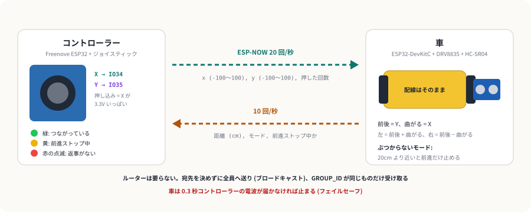
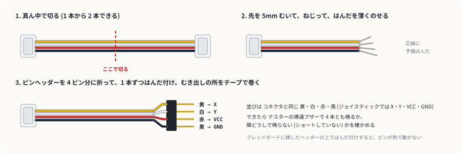
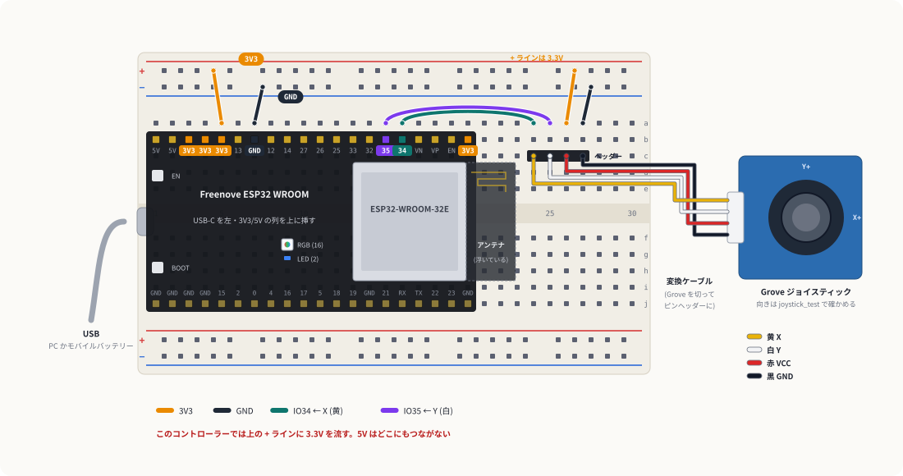

ワイヤレス操縦
Freenove の ESP32 とジョイスティックで手持ちのコントローラーを作り、障害物回避カーを無線で操縦します。車の配線はそのままで、スケッチを書き替えるだけです。車の超音波センサーはそのまま生かして、前に壁があると前進だけ止める「ぶつからないモード」を付けます。
1しくみ
ESP-NOW: ルーターなしで ESP32 どうしが話す
ESP-NOW は Espressif が用意している無線の仕組みで、Wi-Fi の電波を使いながら、ルーターにはつながずに ESP32 どうしで短いメッセージを直接やりとりします。このページでは宛先を決めずに近くの全員へ送り (ブロードキャスト)、受け取った側が GROUP_ID の番号を見て自分宛てかを決めます。相手の MAC アドレスを調べて書き込む手間がありません。

ジョイスティックは可変抵抗 2 個
Grove ジョイスティックの中には 10kΩ の可変抵抗が縦と横に 1 個ずつ入っていて、倒した向きに応じて X と Y の電圧が変わります (秋月の商品説明より)。ESP32 はこの電圧をアナログ入力 (ADC1 の IO34・IO35) で読みます。スティックを押し込むと X が電源電圧いっぱいになる作りで、押し込みは「X がいっぱいになったか」で判断します (Seeed のマニュアルより)。
押し込むと X に VCC がそのまま出てきます。VCC を 5V にすると ESP32 の入力に 5V が入って壊れます。秋月の仕様では 3.3〜5V で動くので、3.3V で使います。
2変換ケーブルを作る
ジョイスティックの端子は Grove (2mm ピッチの 4 ピン) で、ブレッドボード (2.54mm ピッチ) には挿せません。Grove ケーブルを半分に切り、切った側をピンヘッダーにはんだ付けして変換ケーブルにします。1 本のケーブルから 2 本できます。

- ピンヘッダー (1×40) を 4 ピンのところで、ペンチで折る。
- 4 ピンのヘッダーを、長い方のピンを下にしてブレッドボードに挿しておく。熱でピンが動かず、はんだ付けしやすい。
- ケーブルの線を 1 本ずつ、上に出ている短いピンにはんだ付けする。並びはコネクタと同じ 黄・白・赤・黒。
- 隣どうしが触れないよう、1 本ずつと全体をビニールテープで巻く。
- テスターの導通ブザーで、コネクタの穴とピンの間が 4 本とも鳴るか、隣どうしのピンで鳴らないかを確かめる。
3コントローラーの配線
Freenove のボードをいつもの向き (USB を左、3V3/5V の並ぶ列を上) で 1〜20 行に挿します。変換ケーブルのピンヘッダーは c24〜c27 に、黄 (X) が 24 行、黒 (GND) が 27 行に来る向きで挿します。

| # | どこから | どこへ | 役割 |
|---|---|---|---|
| 1 | a5 (3V3) | 上の + ライン | このコントローラーでは + ラインが 3.3V |
| 2 | a7 (GND) | 上の − ライン | GND を配る |
| 3 | 変換ケーブルのピンヘッダー | c24〜c27 | c24 = 黄 X、c25 = 白 Y、c26 = 赤 VCC、c27 = 黒 GND |
| 4 | a16 (IO34) | a24 | X を読む |
| 5 | a15 (IO35) | a25 | Y を読む |
| 6 | 上の + ライン | a26 | ジョイスティックの VCC (3.3V) |
| 7 | 上の − ライン | a27 | ジョイスティックの GND |
首振りガジェットでは上の + ラインが 5V でした。このコントローラーでは 3.3V です。組み替えるときは、5V の線 (a1 → + ライン) を必ず抜いてから配線します。
4段階 1: ジョイスティックの値を見る
コントローラーだけで確かめます。書き込んだら「ツール → シリアルプロッタ」(115200 baud) を開きます。起動の瞬間はスティックに触らない (その位置を真ん中として覚える)。起動したら一度、スティックをぐるっと大きく回します (端の位置を覚える)。
- 手を離すと
xとyが 0 に戻る - 右に倒すと
xが +100、前 (自分から遠い方) に倒すとyが +100 に近づく。逆ならINVERT_X/INVERT_Yをtrueにする - 押し込むと
pressが 100 になり、rawXが 102 (= 4095 ÷ 40) 付近に張り付く - 倒しても
pressが 100 にならない (押していないのに 100 になるならPRESS_RAWを上げる)
- x も y もずっと 0、rawX・rawY が 0 付近 → 赤 (VCC) か + ラインの 3.3V が来ていない。
- rawX と rawY の役割が逆 → 変換ケーブルの黄と白が入れ替わっている。ヘッダーの向きを見る。
- 手を離しても 0 にならない →
DEAD(真ん中の遊び) を 8 から 12 くらいに上げる。
5段階 2: 車に rc_car を書き込む
車の配線は障害物回避カーのまま。障害物回避カーの段階 1 で決めた LEFT_REVERSED / RIGHT_REVERSED を書いてから、PC から車の ESP32 (DevKitC) に書き込みます。
- シリアルモニタに「コントローラーを待っています」と出て、タイヤは回らない
6段階 3: コントローラーに rc_controller を書き込む
段階 1 で決めた INVERT_X / INVERT_Y を書いてから、コントローラー (Freenove) に書き込みます。GROUP_ID と CHANNEL は車と同じ値のままにします。車は箱の上に載せてタイヤを浮かせ、電池のスイッチを入れておきます。
- コントローラーの LED が緑になり、車のシリアルモニタに「コントローラーとつながりました」と出る
- 前に倒すと両方のタイヤが前に回り、右に倒すと左のタイヤが前・右のタイヤが後ろに回る
- スティックを離すとタイヤが止まる
- コントローラーの USB を抜くと、0.3 秒ほどで車のタイヤが止まる (フェイルセーフ)。ここは走らせる前に必ず確かめる
コントローラーのシリアルモニタには、送っている x・y と、車から返ってきた距離が 0.3 秒ごとに出ます。HC-SR04 の前に手をかざすと距離が変わります。
7走らせる
- 車の USB を PC から抜いて、モバイルバッテリーにつなぎ替える。電池のスイッチを入れて床に置く。
- コントローラーを PC かモバイルバッテリーにつなぐ。LED が緑になったら操縦できる。
- 壁に向かって前に倒し続けると、20cm 手前で止まり、LED が黄になる。横に倒すか後ろに倒せば動ける。
- スティックを押し込むと「ぶつからないモード」が OFF になり、壁の手前でも止まらなくなる。もう一度押すと ON。
- 少し倒しただけでは動かない →
MIN_DUTYを上げる。いきなり速く動く → 下げる。 - 曲がりすぎる →
TURN_RATEを下げる (0.5 くらい)。 - 止まるのが壁に近すぎる →
STOP_CMを大きくする。距離は 0.2 秒ごとにしか測れないので、速いほど余裕が要る。
8うまくいかないとき
| 症状 | 見るところ |
|---|---|
| LED が赤の点滅のまま (車から返事がない) | 車の ESP32 に rc_car が入っているか、電源が入っているか。両方の GROUP_ID と CHANNEL が同じか |
| つながったり切れたりする | 近づけて試す。ESP32 の金属のカバーの先 (アンテナ) を手や電池で覆わない |
| 前に倒すと後ろに進む / 左右が逆 | 前後が逆 → コントローラーの INVERT_Y。左右が逆 → INVERT_X。片方のタイヤだけ逆 → 車の LEFT_REVERSED / RIGHT_REVERSED |
| スティックを離しても少し動く | コントローラーの DEAD を上げる |
| モーターが動き出すと車の ESP32 が再起動する | 障害物回避カーと同じ。電池の残り、GND の共通 (#1, #8, #9) |
9改造のアイデア
- バックセンサー: 車から返ってくる距離に合わせて、コントローラーにつないだ圧電スピーカーを「近いほど速く」鳴らす。
- ターボボタン: スティックの押し込みを「押している間だけ速く」に変える。
pressesの代わりに押している状態を送る。 - 首振りレーダー: 3 台目の ESP32 にサーボと HC-SR04 を載せて首を振り、角度と距離をコントローラーに送って、シリアルプロッタに扇形の地図を描く。